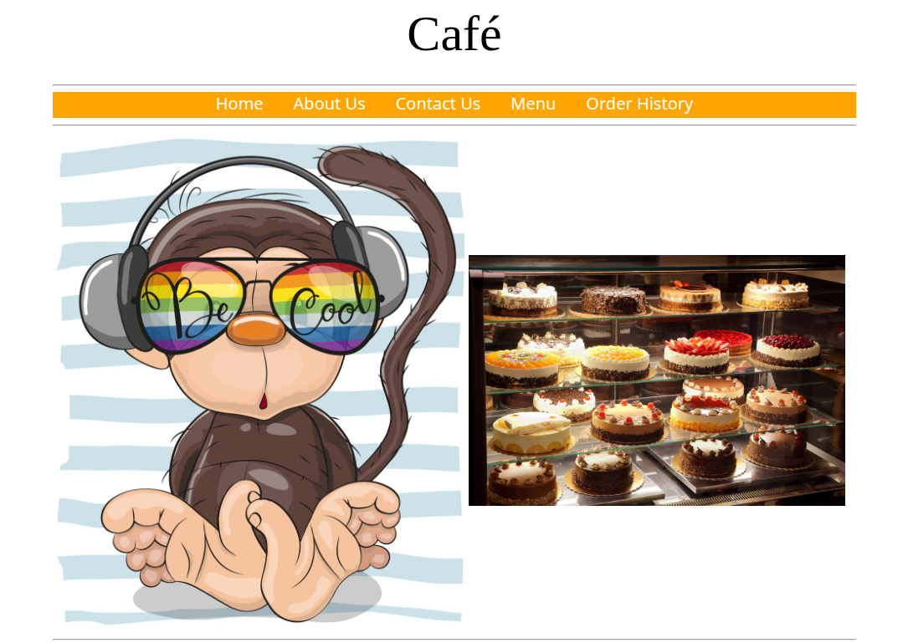
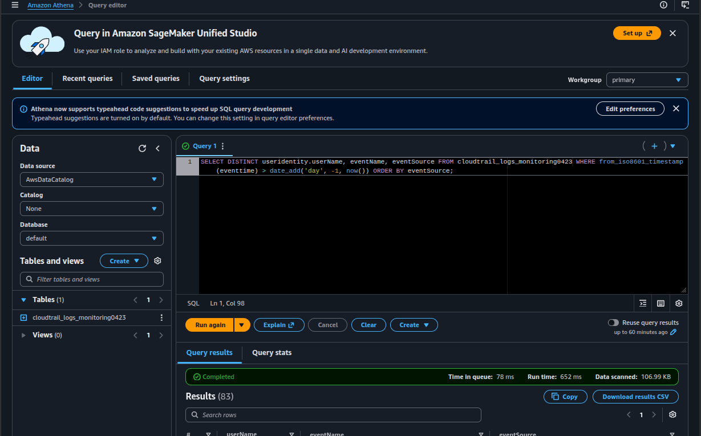
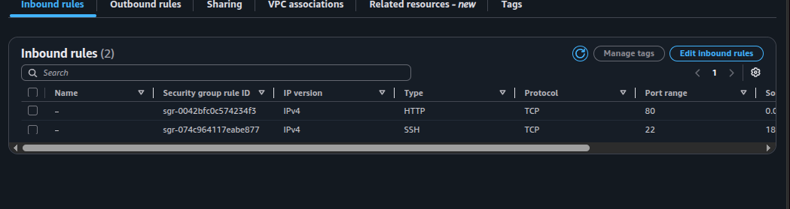
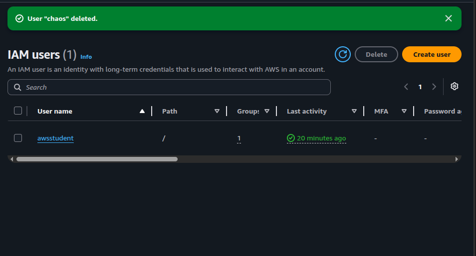

Detection
Enabled a CloudTrail trail named monitor storing logs in S3 (KMS-encrypted).
Within a minute the Café website was defaced — and every API call leading to it was logged.
A defacement on the Café web server triggers a full incident response cycle: enable CloudTrail, analyze logs with grep, the AWS CLI and Amazon Athena, identify the IAM user behind the attack, and remediate both the AWS account and the EC2 instance.
Investigated and remediated a real defacement on the Café Web Server. CloudTrail was enabled
before the attack happened, so the audit trail captured the unauthorized API call. After
escalating from grep on raw JSON logs to
AWS CLI lookup-events to Athena SQL queries,
the attacker (IAM user chaos) and the rogue OS account (chaos-user) were
identified, removed, and the security group was restored to a safe baseline.
Enabled a CloudTrail trail named monitor storing logs in S3 (KMS-encrypted).
Within a minute the Café website was defaced — and every API call leading to it was logged.
Used grep on the raw JSON, then AWS CLI filters by
ResourceType=AWS::EC2::SecurityGroup, and finally an
Athena SQL query that surfaced the attacker in seconds.
Killed the active chaos-user SSH session, deleted the OS account, removed the
rogue inbound rule SSH/22 0.0.0.0/0, disabled SSH password authentication, and
deleted the IAM user chaos.
Restored the original Coffee-and-Pastries.jpg from the backup file the attacker
left behind in /var/www/html/cafe/images/.
Sofía's investigation kicks off after Martha and Frank notice the homepage was modified. Initial evidence before any analysis:
Café Web Server (WebSecurityGroup)SSH/22 0.0.0.0/0grep.aws cloudtrail lookup-events filtered by resource type.Documented chronologically by phase of the incident, not by AWS service. Each step shows the actual commands executed and the evidence captured.
/32, not 0.0.0.0/0. This becomes important later: anything wider than /32 on port 22 is a red flag.http://<WebServerIP>/cafe/ to confirm the site rendered normally. Baseline established.monitor (the lab depends on this name).monitoring#### (four random digits, in this run monitoring0423).<initials>-KMS.
SSH/22 from 0.0.0.0/0. Not added by the operator./var/www was swapped, and the SG was modified through the AWS control plane.grep and the AWS CLIec2-user (using the /32 rule added earlier — note the irony of investigating from inside the compromised instance).mkdir ctraillogs && cd ctraillogs
aws s3 ls
aws s3 cp s3://monitoring0423/ . --recursive
# Logs land in AWSLogs/<account-num>/CloudTrail/<Region>/<yyyy>/<mm>/<dd>/
cd AWSLogs/.../...
gunzip *.gz
cat <filename>.json | python -m json.tool
Standard fields surfaced: awsRegion, eventName, eventSource,
eventTime, requestParameters, sourceIPAddress,
userIdentity.
sourceIPAddress and eventName across every file with a bash for loop:for i in $(ls); do echo $i && cat $i | python -m json.tool | grep sourceIPAddress; done
for i in $(ls); do echo $i && cat $i | python -m json.tool | grep eventName; done
The output was noisy — a flood of Describe*, List* and the occasional
Update* action. Useful to confirm the trail was working, but not enough to
pinpoint the attacker. Time to switch tools.
# Discover region from the EC2 instance metadata service
region=$(curl http://169.254.169.254/latest/dynamic/instance-identity/document \
| grep region | cut -d '"' -f4)
# Resolve the SG ID of the Café Web Server by tag
sgId=$(aws ec2 describe-instances \
--filters "Name=tag:Name,Values='Cafe Web Server'" \
--query 'Reservations[*].Instances[*].SecurityGroups[*].[GroupId]' \
--region $region --output text)
echo $sgId
# Console logins on the account (returned essentially just the current user)
aws cloudtrail lookup-events \
--lookup-attributes AttributeKey=EventName,AttributeValue=ConsoleLogin
# All actions on any SG, then narrowed to the Café SG
aws cloudtrail lookup-events \
--lookup-attributes AttributeKey=ResourceType,AttributeValue=AWS::EC2::SecurityGroup \
--region $region --output text | grep $sgId
ConsoleLogin filter returned almost nothing
interesting. That's already a clue — if there's no rogue console login, the attacker likely
used programmatic access (an API key, not a browser).
The CLI lookups returned useful but still hard-to-read text blocks. For a wider search across
fields like useridentity.userName, SQL on Athena is the better tool.
monitoring0423 bucket. Athena generated a CREATE EXTERNAL TABLE that maps each JSON field to a column. The useridentity column is a struct, and resources is an array.s3://monitoring0423/results/ under Settings → Manage.SELECT useridentity.userName, eventtime, eventsource, eventname, requestparameters
FROM cloudtrail_logs_monitoring0423
LIMIT 30;
Useful for understanding the column layout. Not enough to find the culprit. Followed the challenge hints and built up the filter step by step until landing on the query that solved the case:
SELECT DISTINCT useridentity.userName, eventName, eventSource
FROM cloudtrail_logs_monitoring0423
WHERE from_iso8601_timestamp(eventtime) > date_add('day', -1, now())
ORDER BY eventSource;

Two complementary filters made the answer obvious. A tighter version using
WHERE eventsource = 'ec2.amazonaws.com' AND eventname LIKE '%Security%'
isolates only SG-related EC2 events, and the unauthorized
AuthorizeSecurityGroupIngress stands out clearly with a userName
that is not the current operator.
chaosec2:AuthorizeSecurityGroupIngress against the Café Web Server SGeventtime and sourceIPAddress columns inside the Athena result setIdentification was only step one. The remediation is the part that actually stops the bleeding — and it has to happen across three different layers: the OS, the IAM control plane, and the static content of the website.
sudo aureport --auth confirmed an unknown account chaos-user had recent auth records.who showed chaos-user was still logged in over SSH.sudo userdel -r chaos-user failed — the user was active — but the error returned the live PID.sudo kill -9 <PID> dropped the session, then sudo userdel -r chaos-user succeeded.sudo cat /etc/passwd | grep -v nologin confirmed only standard Amazon Linux accounts (root, sync, shutdown, halt, ec2-user) remained.sudo ls -l /etc/ssh/sshd_config showed the file had been modified today — also part of the attack./etc/ssh/sshd_config in vi:# Before
PasswordAuthentication yes
#PasswordAuthentication no
# After
#PasswordAuthentication yes
PasswordAuthentication no
sudo service sshd restart. From now on, only key-pair authentication is accepted — a guessed/leaked password is no longer enough.
Removed the rogue inbound rule SSH/22 0.0.0.0/0 from the Café Web Server SG.
Only the original HTTP/80 and the SSH/22 from /32 remained:

0.0.0.0/0 rule that chaos added via AuthorizeSecurityGroupIngress is gone.The attacker conveniently kept a backup of the original image:
cd /var/www/html/cafe/images/
ls -l
sudo mv Coffee-and-Pastries.backup Coffee-and-Pastries.jpg
A hard refresh of the Café URL showed the legitimate bakery photo again.
chaos → Delete (typed the user name to confirm).awsstudent remained as the active IAM user.
awsstudent remains. The credentials used to run AuthorizeSecurityGroupIngress no longer exist.Quick reference of the tools and queries used during the investigation, grouped by purpose.
aws s3 ls — list buckets to recover the monitoring#### name.aws s3 cp s3://monitoring0423/ . --recursive — pull every object from the trail bucket.gunzip *.gz — CloudTrail writes each event batch as a gzipped JSON file.cat <file>.json | python -m json.tool — pretty-print one event to learn the schema.for i in $(ls); do
echo $i
cat $i | python -m json.tool | grep sourceIPAddress
done
Same pattern works for eventName, userIdentity, etc. Useful for a
first pass; breaks down once the logs grow into thousands of events.
cloudtrail lookup-eventsaws cloudtrail lookup-events \
--lookup-attributes AttributeKey=EventName,AttributeValue=ConsoleLogin
aws cloudtrail lookup-events \
--lookup-attributes AttributeKey=ResourceType,AttributeValue=AWS::EC2::SecurityGroup \
--region $region --output text
grep:
aws cloudtrail lookup-events \
--lookup-attributes AttributeKey=ResourceType,AttributeValue=AWS::EC2::SecurityGroup \
--region $region --output text | grep $sgId
region=$(curl http://169.254.169.254/latest/dynamic/instance-identity/document \
| grep region | cut -d '"' -f4)
Note: this is IMDSv1. In production, IMDSv2 (token-based) is the secure default.
Once Athena was pointed at the CloudTrail bucket, the same investigation became a series of declarative queries instead of bash plumbing.
-- Explore the schema
SELECT useridentity.userName, eventtime, eventsource, eventname, requestparameters
FROM cloudtrail_logs_monitoring0423
LIMIT 30;
-- All users active in the last day and the distinct actions they took
SELECT DISTINCT useridentity.userName, eventName, eventSource
FROM cloudtrail_logs_monitoring0423
WHERE from_iso8601_timestamp(eventtime) > date_add('day', -1, now())
ORDER BY eventSource;
-- Tight filter: only EC2 SG-related events
SELECT useridentity.userName, eventtime, eventname, sourceIPAddress
FROM cloudtrail_logs_monitoring0423
WHERE eventsource = 'ec2.amazonaws.com'
AND eventname LIKE '%Security%'
ORDER BY eventtime DESC;
sudo aureport --auth — recent authentication records.who — currently logged-in sessions.sudo userdel -r chaos-user — delete OS user and home directory.sudo kill -9 <PID> — terminate the live session before delete.sudo cat /etc/passwd | grep -v nologin — verify no other login-capable users remain.sudo vi /etc/ssh/sshd_config → set PasswordAuthentication no.sudo service sshd restart — apply the change.AuthorizeSecurityGroupIngress call would have left no trace and the attacker would never have been identified.grep works for a handful of files, aws cloudtrail lookup-events for targeted filters, and Athena once the dataset stops fitting in your terminal. Each is a step up in expressiveness./32 only. Any rule wider than /32 on port 22 is an instant red flag in this account model — exactly how the rogue rule was spotted by visual inspection of the SG.PasswordAuthentication. Even with a tight SG, an instance accepting password-based SSH is one credential leak away from compromise. Key-pair only is non-negotiable.
The lab is a compressed end-to-end IR cycle: detect → triage → identify →
contain → eradicate → recover. The attacker's footprint touched both the
AWS control plane (an unauthorized API call against the SG) and the instance OS
(a rogue account plus a modified sshd_config). Neither half makes
sense in isolation — defending only the SG would have left the OS open; cleaning
only the OS would have left the SG hole behind for the next attacker.
The most valuable takeaway is not any single command but the realization that auditability is a prerequisite for investigation, not a feature added afterwards. CloudTrail is essentially free; not running it is the actual cost.
Athena is also more than a convenience: scanning ~107 KB in 652 ms with a single SQL query against the same JSON files that took multiple bash loops to skim shows why log analytics belongs in a query engine, not in a terminal pager.